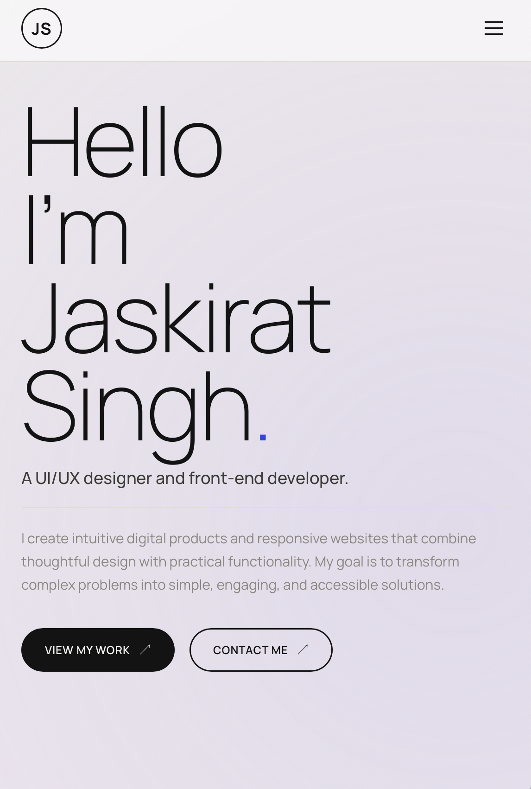
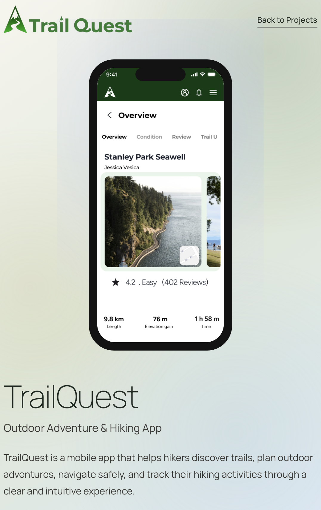
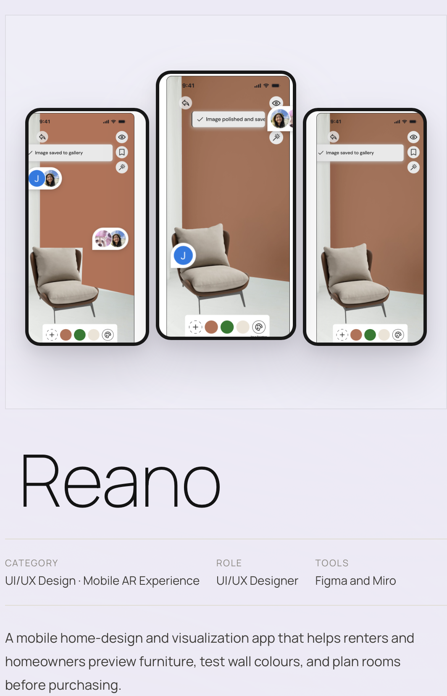

Land on Homepage
See Jaskirat’s role and featured projects.
Responsive Front End Development Project
A responsive portfolio website designed and developed with HTML and CSS to demonstrate clear information architecture, reusable layouts, and strong front end fundamentals.
View Website
This project focused on planning, designing, and developing a responsive portfolio website using semantic HTML and modern CSS. The goal was to create a clear digital space for presenting work while demonstrating practical front end skills.
The final website adapts across desktop, tablet, and mobile layouts and uses reusable components, consistent spacing, and accessible navigation.


This flow shows how a visitor moves through the portfolio to understand Jaskirat’s work, background, and availability.
See Jaskirat’s role and featured projects.
Scan featured and smaller work.
Select a project to review in detail.
Explore process, screens, and outcomes.
Learn about skills and education.
Open detailed experience and capabilities.
Select email or LinkedIn.
Send a professional message.
Improved my ability to translate wireframes into structured, reusable front end layouts.
Learned to design responsive behaviour as part of the system rather than as a final adjustment.
Strengthened my understanding of semantic HTML, visual hierarchy, and maintainable CSS.